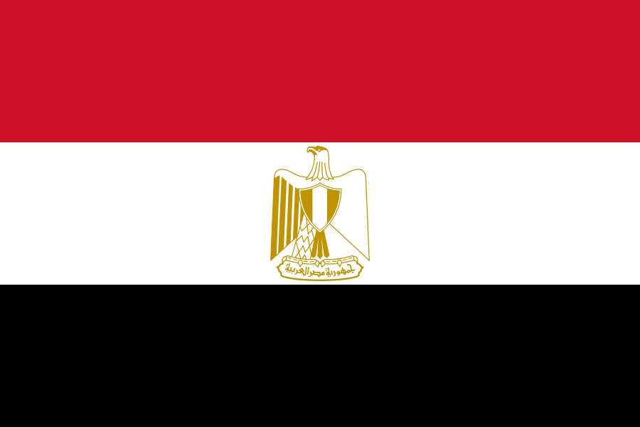
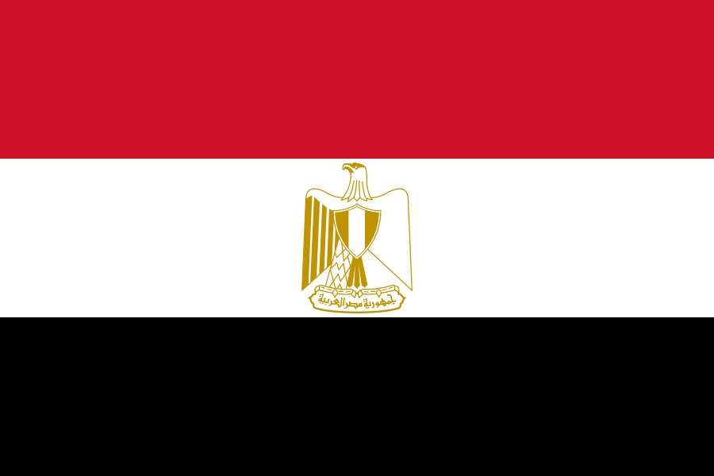
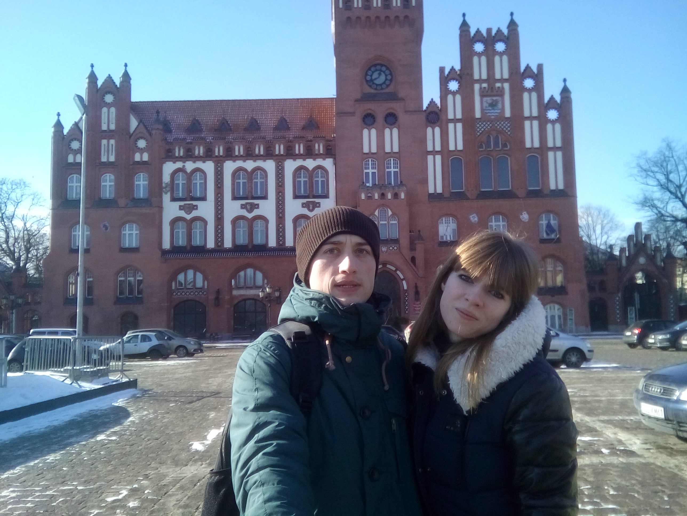
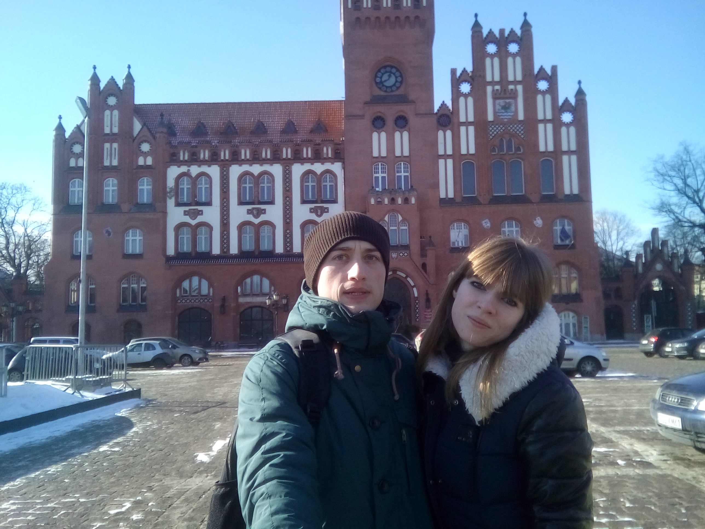
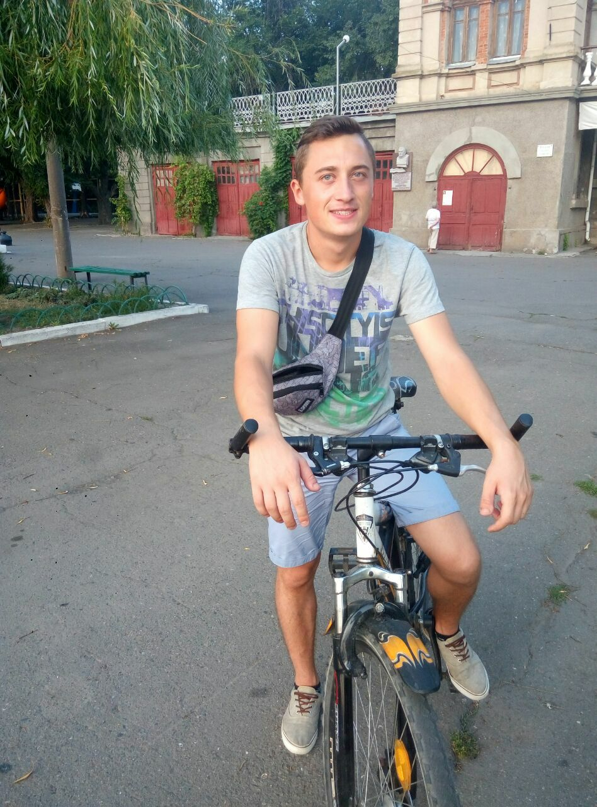

Мои увлечения
Я увлекаюсь многими вещами, вот одни из самых любимых:
-
Путешествия - очень люблю это занятие. Одна из моих мечтаний, как
только приобрету автомобиль, исколесить нашу страну. Ведь она так
багата замечательными местами и неожидаными историями о них. Из
других стран, я посетил пока только три: Чехию
 , Польшу
и Египет
,
но это только начало.
, Польшу
и Египет
,
но это только начало.
 

-
Велопрогулки. Как классно размяться после трудовой недели в офисе.
